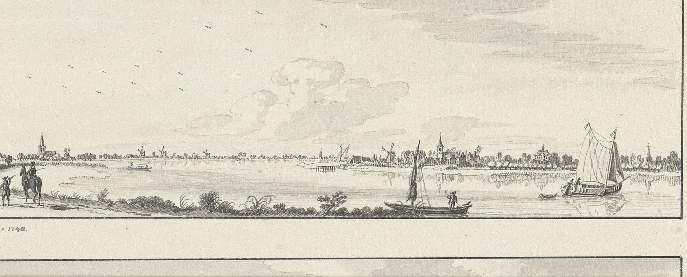
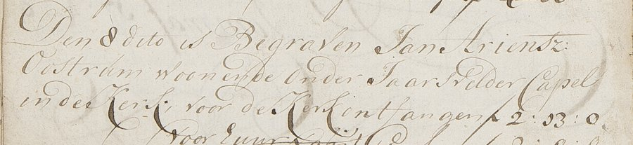
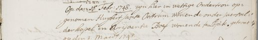
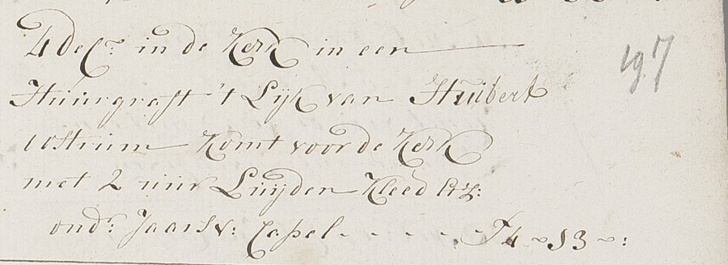
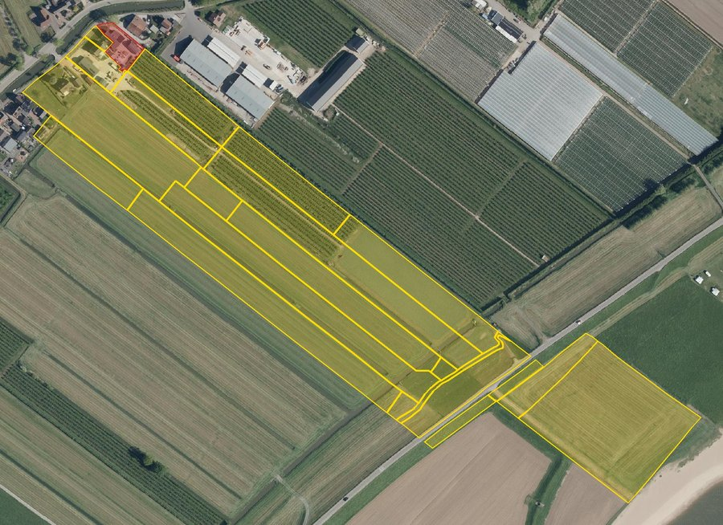
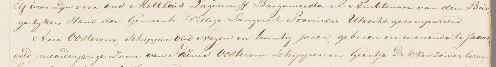
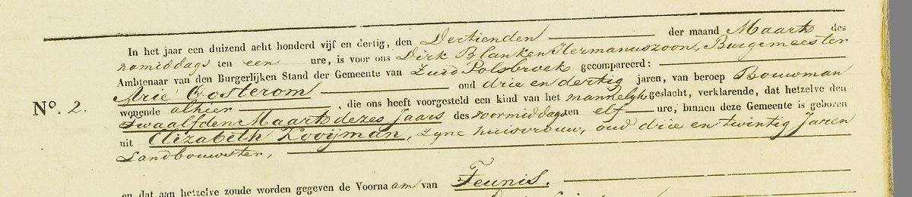
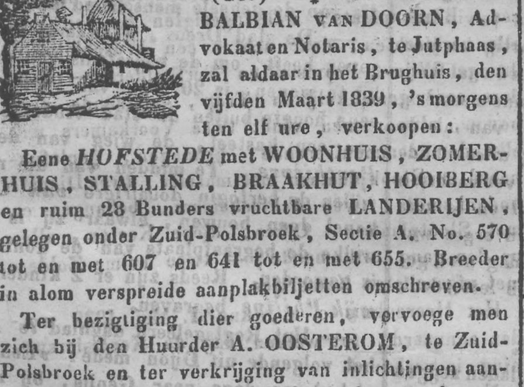
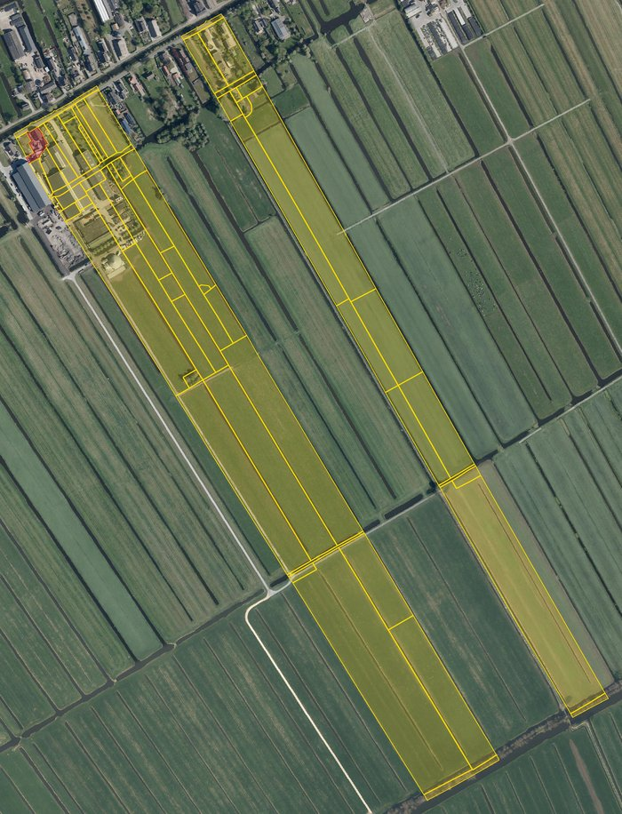
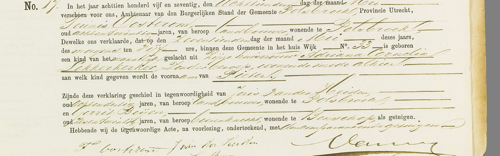

De familie Oosterom heette vroeger Van Oostrum, en daarvóór Smetser. Al bijna vijfhonderd jaar woont
ze in hetzelfde stukje Nederland: de polders langs de Lek, tussen Lopik en Bergambacht. Bijna driehonderd jaar lang
waren de mannen schipper op de rivier, daarna boer. De namen Teunis en Arie komen in elke generatie terug.

De Lek rond 1745, met in de verte Lopik en Jaarsveld: zo zag het eruit toen Huijbert en Teunis van
Oostrum hier woonden. Tekening, Rijksmuseum, CC0.
De naam Van Oostrum komt van Oostrum (Osterhem, "de oostelijke woonplaats"), een verdwenen gehucht
bij Houten. Daar woonde een bekende familie Van Oostrum. Maar daar stammen wij niet van af. Onze familie heette
oorspronkelijk Smetser, en woonde al in de 16e eeuw bij Jaarsveld aan de Lek.
Volgens een genealogie van de familie (famkroon.nl)
is de oudste bekende voorvader Cornelis Smetser, geboren rond 1515. Zijn zoon Aryen en kleinzoon Cornelis
waren schipper en boer bij Jaarsveld. Rond 1580 huurde een Cornelis Ariensz Smetser het goed
Oversloot in het gerecht Jaarsveld, van jonkheer Carel Steur.
Zijn kleinzoon Adriaan Smetser (ca. 1595–1646) is volgens die genealogie de eerste die zich ook
Van Oostrum noemde. Zijn zoon Arien (ca. 1630 – vóór 1669) was weer schipper en boer, en trouwde met
Grietgen Hendricks. Hun kinderen werden in Lopikerkapel gedoopt als Smetser: Arien (1653), Aeltjen (1655),
Hendrick (1659) en Petertgen (1662). Maar toen Aeltjen in 1680 trouwde, heette ze al "Aaltjen van Oostrum". Vanaf
dan bleef de naam Van Oostrum, en verdween Smetser.
Waarom Van Oostrum?
Dat is nog een raadsel, ook voor de maker van de genealogie op famkroon.nl, die het als open vraag op zijn site
zet. De twee namen werden een tijd naast elkaar gebruikt; een naam als Van Oostrum verwijst meestal naar een
plek, maar een bloedband met de bekende familie Van Oostrum bij Houten is niet gevonden. Drie mogelijkheden
blijven over: een moeder of grootmoeder die Van Oostrum heette, een stuk land met die naam, of een bijnaam. De
notarisakten van Lopik (1609–1664) staan sinds kort als scans online; die lezen we nog door.
Hun zoon was Jan Ariensz van Oostrum, schipper onder Jaarsvelderkapel. Hij werd bijna negentig en werd in
februari 1753 in de kerk begraven. Zijn zoon Huijbert is de eerste voorvader die we met akten zeker kennen.

"Den 8 dito [februari 1753] is begraven Jan Ariensz Oostrum, woonende onder Jaarsvelder Capel, in de kerk."
Begraafboek Lopikerkapel.
Hoe zeker is dit? Dat Huijbert een zoon van Jan Ariensz was, is vrijwel zeker. Dat Jan een zoon
was van Arien Smetser en Grietgen Hendricks, staat in de genealogie van famkroon.nl, waar Jan ook "Smetser" en "Jan
Ariens Schipper" genoemd wordt. Het past bij alles wat wij in de akten vonden: de namen van zijn kinderen (Arien,
Aeltje, Hendrik, Grietje), de plek en het beroep. De generaties vóór 1650 komen uit die genealogie en zijn nog niet
door ons in de akten gecontroleerd. Zie de bronnenpagina.
Huijbert van Oostrum woonde in de buurtschap Jaarsvelderkapel en ging naar de kerk in Lopikerkapel,
een klein dorp in de Lopikerwaard. In februari 1748 lieten hij en Ariaentje Boef uit Lopik zich in de kerk
"aantekenen" om te trouwen. Hij noemde zich toen Huybert Janse Oostrum: Huijbert, zoon van Jan.

"Op den 15 Febr. 1748 zyn hier in wettige ondertrou opgenomen Huybert Janse Oostrum wonende onder
Jaerselderkapel en Arijaentie Boef wonende te Lopik, getrout op den 3 Maert 1748." Trouwboek Lopikerkapel,
Het Utrechts Archief.
Vier weken na de bruiloft lieten ze al een dochtertje dopen. Ariaentje stierf anderhalf jaar later, in december
1749. In 1751 trouwde Huijbert met Willempje Jaarsveld, uit het dorp met dezelfde naam. Ze kregen minstens
vijf kinderen en hij werd in december 1792 begraven in de kerk van Lopikerkapel, in een gehuurd graf. De klok —
gegoten door Gerhart Schimmel in 1682, en nog altijd in de toren — luidde twee uur voor hem.

"4 dec. in de kerk in een huurgraft 't lyk van Huibert Oostrum, komt voor de kerk met 2 uur luyden,
kleed, ond(er) Jaarsv(elder) Capel – f 4-13." Begraafboek Lopikerkapel 1792.
Zijn jongste zoon Teunis (1762–1830) werd schipper. Hij woonde in Jaarsveld, een dijkdorp
direct aan de Lek. Schippers vervoerden vracht over de rivier, voor de boeren in de polders. In 1787 trouwde Teunis met
Geertje Dekker uit Noordeloos, aan de overkant van de rivier. Ze kregen veertien kinderen; vier zoons
noemden ze Arie, waarvan de eerste drie waarschijnlijk de baby's zijn die in 1796 en 1800 werden begraven. De
vierde Arie, geboren in februari 1801, werd tachtig. In augustus 1830 stierven Geertje en Teunis kort na
elkaar, met drie dagen ertussen.
Teunis was niet alleen schipper: hij en Geertje hadden een eigen boerderij aan de Enge IJssel bij
Jaarsvelderkapel — nu het Kapelsepad in Lopikerkapel. Een huis met schuur en hooiberg, 7,7 hectare land in
lange stroken tot aan de Lekdijk, en daarbij hooiland in de uiterwaarden van de Lek en een tweede huis in Lopik:
samen zo'n 14 hectare. Dat staat in de memorie van successie die de kinderen in november 1830 bij de
belasting inleverden, en in het kadaster van 1832. Wie de boerderij vóór Teunis had, is nog niet uitgezocht; zijn
vader Huijbert woonde in 1771 al "onder Jaarsvelder Capel".

Het land van Teunis in 1832 (geel), met het erf aan de Enge IJssel (rood). Percelen: HisGIS;
luchtfoto: Beeldmateriaal Nederland / PDOK, CC BY 4.0.
Diezelfde memorie laat zien hoe het de kinderen verging. Huibert was landbouwer in Jaarsveld, Gerrit schoenmaker
in Langerak, Willemina getrouwd met een schoenmaker in Lopik, Machteltje met een landbouwer in Jaarsveld. Arie, Jacobus,
Geertje en Teuntje waren nog "zonder beroep". Onder de akte staan de handtekeningen van de kinderen: ze konden
allemaal schrijven.
In die jaren veranderde ook de naam. In de oudere kerkboeken staat Van Oostrum. Rond 1800 valt het "van"
weg, en vanaf 1807 schrijft de dominee Oosterom. Later in Polsbroek schrijft de ambtenaar vaak Oostrom.
In juni 1830 trouwde Arie Oosterom in Willige Langerak met Elisabeth Kooiman, de 19-jarige
dochter van een boer. In de huwelijksakte staat Arie, net als zijn vader, als schipper.

"Arie Oosterom, schipper, oud negen en twintig jaren, geboren en wonende te Jaarsveld, meerderjarige
zoon van Teunis Oosterom, schipper, en Geertje Dekker, zonder beroep." Huwelijksakte Willige Langerak 1830.
Daarna ging Arie aan land. Het paar ging wonen in Zuid-Polsbroek, een paar kilometer verderop. In 1835 is
Arie daar bouwman (boer) en heet Elisabeth landbouwster.

Geboorteakte van zoontje Teunis, Zuid-Polsbroek 1835: "Arie Oosterom, oud drie en dertig jaren, van
beroep bouwman". Onderaan zet Arie zelf zijn handtekening.
Arie huurde een hofstede van 28 bunder aan de Zuidzijde, van Cornelia Maria de Graaff uit Amsterdam — de
familie die eeuwenlang heer van Zuid-Polsbroek was. Een advertentie in de Utrechtsche Courant van januari 1839
noemt hem als huurder; later dat jaar kocht Arie de hofstede zelf. Het erf ligt aan de huidige
Zuidzijdseweg 142, waar nu een boerderij met rieten dak uit 1888 staat. Bij zijn dood in 1881 bezat Arie
vier boerderijen in Polsbroek, waar zijn kinderen op woonden; na de dood van Elisabeth in 1893 werden twee
ervan geveild, voor f 16.600 en f 29.000.

"Eene HOFSTEDE met WOONHUIS, ZOMERHUIS, STALLING, BRAAKHUT, HOOIBERG en ruim 28 Bunders vruchtbare
LANDERIJEN, gelegen onder Zuid-Polsbroek. (…) Ter bezigtiging dier goederen vervoege men zich bij den Huurder
A. OOSTEROM, te Zuid-Polsbroek." Utrechtsche Courant, 28 januari 1839
(Delpher).

De hofstede van 1839 op een luchtfoto van nu: rood het huis en erf, geel het land in lange stroken.
Percelen: HisGIS; luchtfoto: Beeldmateriaal Nederland / PDOK, CC BY 4.0.
Hun zoon Teunis (1847–1915) was landbouwer in Polsbroek. Hij trouwde in 1870 met Adriana
Cornelia Lekkerkerker uit Benschop. Zij kregen in 24 jaar negentien kinderen. Acht van hen stierven als
baby. Een zoon Teunis werd drie keer geboren (1884, 1886 en 1895) en stierf drie keer binnen een paar maanden.
Zo ging het toen vaak op het platteland.
Teunis was een gezien man in het dorp: in 1879 zat hij in het bestuur van de armenzorg van Polsbroek. Bij de
dood van zijn schoonmoeder in 1892 erfde zijn vrouw een deel van de Lekkerkerker-boerderij in Benschop, die voor
f 38.000 werd verkocht.

Geboorteakte van Pieter, Polsbroek 1875: vader Teunis Oosterom, 28 jaar, landbouwer, woont in huis
nummer 33. Getuige is zijn zwager Joris van der Heiden. Onderaan de handtekening "T. Oosterom".
Hun zoon Pieter (1875–1959) trouwde in 1907 ook met een Lekkerkerker: Willempje, dochter van
Arie Lekkerkerker en Steventje de With. In mei 1908 werd in Polsbroek hun eerste zoon geboren, weer een Arie.
De kerk van Bergambacht. Foto: Sailko,
Wikimedia Commons, CC BY 3.0.
In januari 1909 vertrokken Pieter en Willempje met hun baby uit Polsbroek. Na een korte tijd in Stolwijk
vestigden ze zich in Bergambacht, aan de andere kant van de Lek, in de Krimpenerwaard. Pieter was er
landbouwer aan de Hogedijk, en daar werden hun andere kinderen geboren. In 1925 verhuisde het gezin naar
Langerak. Pieter overleed in 1959 in Bergambacht, 84 jaar oud.
Hun zoon Arie Oosterom (1908–1988) — de baby waarmee ze in 1909 verhuisden — groeide op in Bergambacht.
Hij trouwde met Johanna Jacoba de Jong
(1917–1994) en kreeg vijf kinderen. Zij en hun kinderen leven nog of zijn pas kort geleden overleden. Daarom
staan ze niet met naam op deze site.